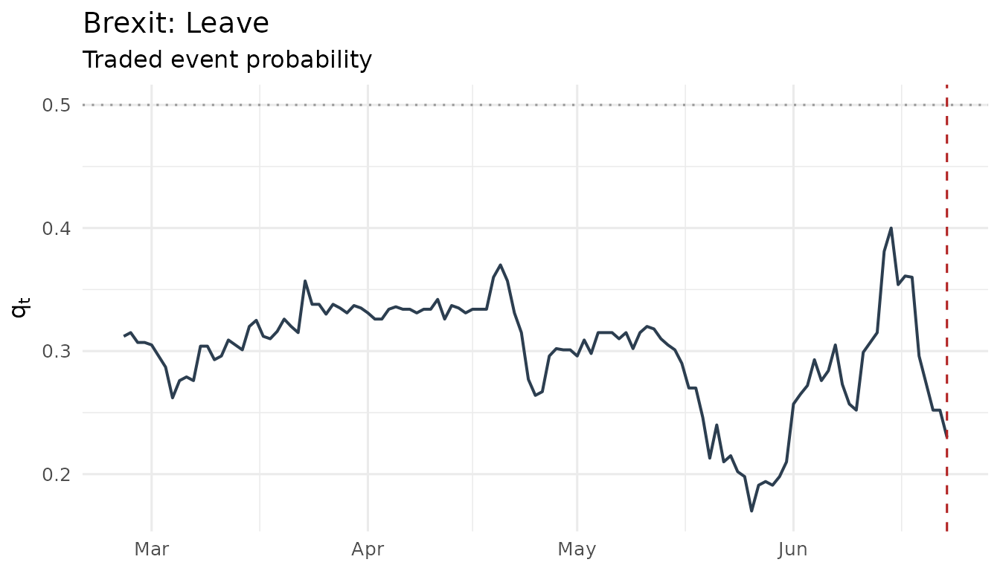
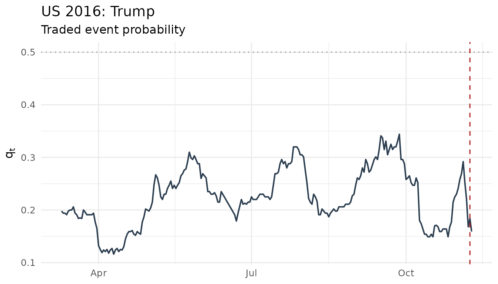
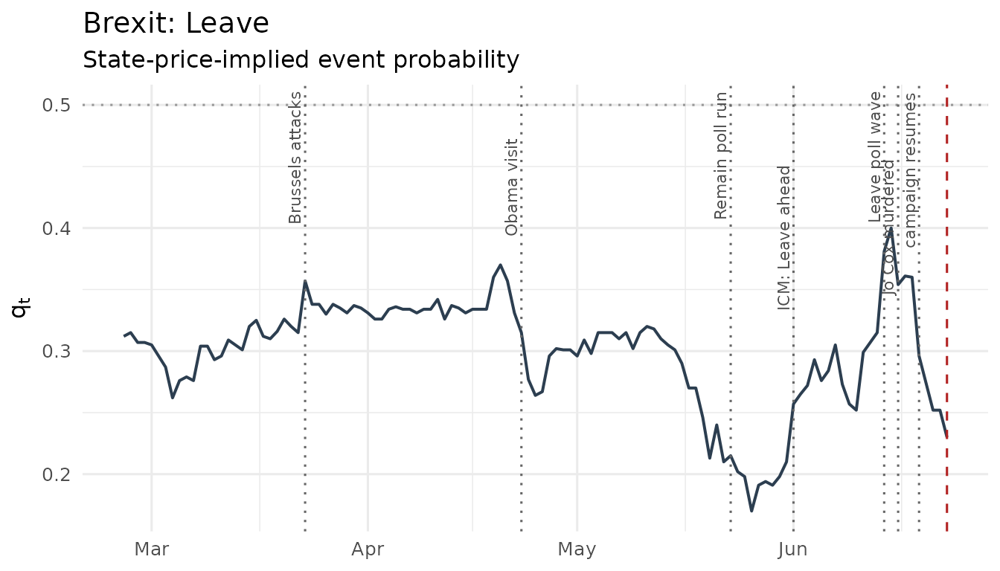
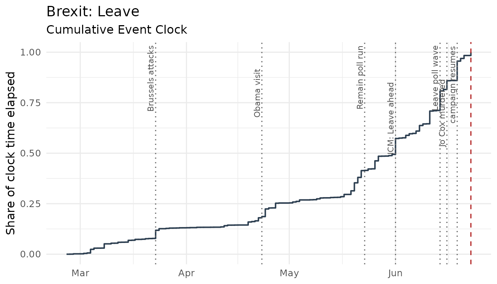
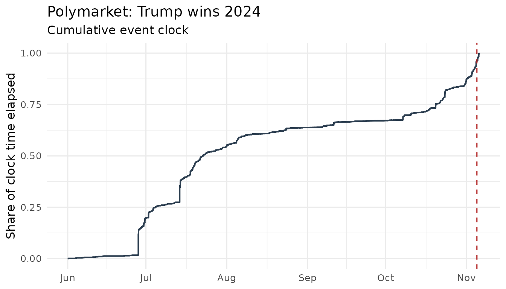
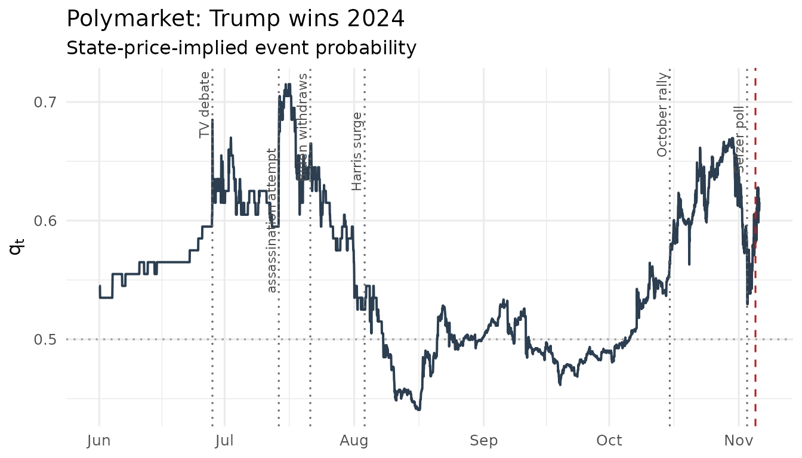
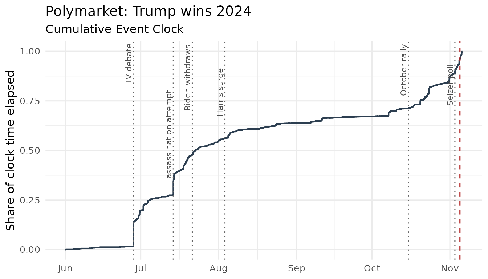
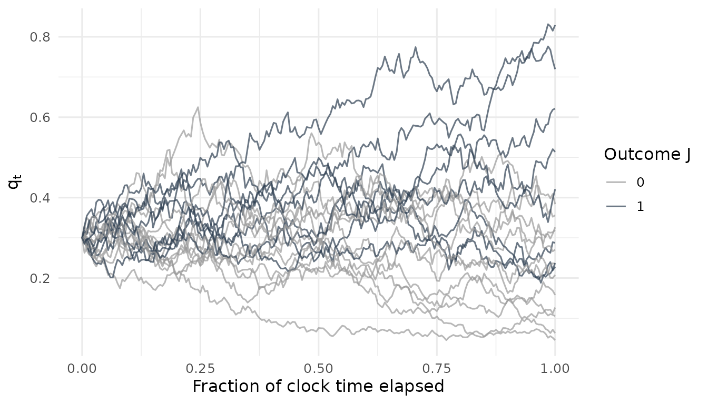

Getting started: the Event Clock for Brexit, the 2016 U.S. election, and Polymarket
Source:vignettes/eventclock-brexit.Rmd
eventclock-brexit.RmdWhat this package measures
Before a scheduled event — a referendum, an election, a central-bank decision, a court ruling — markets learn. Polls come out, news breaks, and the price of a contract that pays out if the event happens moves up and down. The Event Clock measures how much outcome-relevant news arrived over any period, and when. A week of big, frequent revisions is a week of lots of news; a flat week is a week of none. Measuring this matters whenever something is priced before the event: an option that expires before an election is exposed to the news that will arrive while it is alive, not to the election result itself.
What you need: a time series of an event probability between 0 and 1 — a prediction-market price, a betting quote, a probability implied by fed funds futures or a merger spread — with a date or timestamp.
What you get: how much news arrived over any window and when, robust variants that separate big news days from steady flow, real-time forecasts of the news still to come, and closed-form calculators for option and risk questions.
Key terms
- Event probability \(q_t\). The traded price of a contract paying 1 if the event happens. After removing discounting it is a probability as priced by the market — which may include risk premia, so it need not equal anyone’s belief. (In the papers: the state-price-implied event probability.)
- Log odds \(L_t = \log\{q_t/(1-q_t)\}\). The probability on a scale where a move from 50% to 60% and a move from 89% to 92% count about the same.
- Event Clock \(A_{t,T}\). The amount of news between \(t\) and \(T\), also called event-clock time. The package estimates it as the sum of squared log-odds changes, \[\widehat A_{t,T} \;=\; \sum_{t_i \in [t,T)} \bigl[L_{t_{i+1}} - L_{t_i}\bigr]^2 ;\] technically, the quadratic variation of the log odds. Below, \(A\) denotes both the clock and its estimate when no confusion arises.
Two classic event windows: Brexit and the 2016 U.S. election
The package ships two daily event-probability series derived from
betting quotes: the 2016 Brexit referendum and the 2016 U.S.
presidential election (see ?brexit2016).
as_event_prices() turns any data frame with a time column
and a probability column into the package’s standard format;
event_date records when the event resolves (used for plots
and windows). Before taking log odds, probabilities are clipped to
[0.01, 0.99] by default, because log odds explode near 0 and 1.
data(brexit2016)
data(us2016)
ep_gb <- as_event_prices(brexit2016,
time = "date", price = "q_leave",
market_id = "Brexit: Leave", event_date = as.Date("2016-06-23")
)
ep_us <- as_event_prices(us2016,
time = "date", price = "trump",
market_id = "US 2016: Trump", event_date = as.Date("2016-11-08")
)
plot_q(ep_gb)
plot_q(ep_us)
What to look at: Leave hovered between 20% and 40% and lurched in June; Trump spent most of 2016 between 15% and 35% — markets were surprised by both outcomes.
Screening the series first
ec_validate() reports coverage, stale stretches, the
smallest price move (tick), gaps, and the largest moves. It changes
nothing — it only flags:
ec_validate(ep_gb)
#> -- Event-price data-quality report: Brexit: Leave
#> Coverage: 119 obs, 2016-02-26 to 2016-06-23, median spacing 1 days, 0 NA
#> Clipping: 0.0% of observations outside the clipping bounds
#> Staleness: 11.0% zero increments, longest stale run 2 obs
#> Tick: smallest non-zero move 0.001
#> Gaps: 0 gap increment(s), largest 1 days
#> Outliers: max |dL| = 0.292 (5.5 robust SDs)The largest log-odds move is far out in the tails relative to a typical day — but it is genuine news (the June 10–14 Leave poll wave, see below), which is why the package flags rather than drops. (The “robust SDs” here are measured over the full sample; the truncated estimator below measures them within each window, where big days are more common.)
Other sources of event probabilities
Any traded event price can feed the clock. Three converters ship with the package:
# a contract price, discounted to a probability (here: 0.5% discount)
q_from_price(c(0.45, 0.52), discount = 0.995)
#> [1] 0.4522613 0.5226131
# fed funds futures: the September 2024 FOMC meeting, pre-meeting rate
# 5.33%, a hypothetical futures price of 94.74, probability of a 25bp cut
q_from_ffutures(94.74, pre_rate = 5.33,
meeting_date = as.Date("2024-09-18"), step = -0.25)
#> # A tibble: 1 × 5
#> meeting_date implied_avg implied_post delta_rate q
#> <date> <dbl> <dbl> <dbl> <dbl>
#> 1 2024-09-18 5.26 5.16 -0.175 0.700
# merger arbitrage: probability that a deal at 50 closes, if the stock
# would fall back to 35 without it
q_from_deal_spread(c(40, 44, 48.5), offer = 50, fallback = 35)
#> [1] 0.3333333 0.6000000 0.9000000The fed funds converter uses the standard month-average extraction
(the future settles on the average rate over the month, so the price
mixes the rate before and after the meeting day); the merger converter
is \(q = (\text{price} -
\text{fallback})/(\text{offer} -
\text{fallback})\). Meeting dates are in
fomc_meetings.
How much news arrived?
Pick a valuation date — the day you stand on and look forward from; here one month before each vote (May 24 and October 10, 2016) — and add up the clock to one week, two weeks, and the event. Besides the plain sum, the package reports robust variants that show how much came from a few big news days:
-
rv— the plain sum of squared log-odds changes (the baseline); -
truncated— drops changes larger than 3 robust standard deviations (median absolute deviation, within the window); -
bipower— uses products of neighboring absolute changes, which an isolated jump barely affects; -
largest1,largest2— the plain sum without the one or two largest changes.
gb <- event_clock(ep_gb,
from = as.Date("2016-05-24"),
to = c(`1W` = as.Date("2016-05-31"), `2W` = as.Date("2016-06-07"),
`1M` = as.Date("2016-06-23"))
)
us <- event_clock(ep_us,
from = as.Date("2016-10-10"),
to = c(`1W` = as.Date("2016-10-17"), `2W` = as.Date("2016-10-24"),
`1M` = as.Date("2016-11-08"))
)
tab <- rbind(
cbind(case = "Brexit", as.data.frame(gb[, c("horizon", "method", "A")])),
cbind(case = "U.S. election", as.data.frame(us[, c("horizon", "method", "A")]))
)
knitr::kable(
stats::reshape(tab,
idvar = c("case", "horizon"), timevar = "method", direction = "wide"
),
digits = 3, row.names = FALSE,
col.names = c("Case", "Horizon", "RV", "Truncated", "Bipower",
"Largest-1", "Largest-2")
)| Case | Horizon | RV | Truncated | Bipower | Largest-1 | Largest-2 |
|---|---|---|---|---|---|---|
| Brexit | 1W | 0.064 | 0.064 | 0.060 | 0.029 | 0.009 |
| Brexit | 2W | 0.166 | 0.166 | 0.141 | 0.096 | 0.062 |
| Brexit | 1M | 0.510 | 0.510 | 0.374 | 0.425 | 0.341 |
| U.S. election | 1W | 0.015 | 0.015 | 0.011 | 0.010 | 0.005 |
| U.S. election | 2W | 0.046 | 0.046 | 0.025 | 0.021 | 0.016 |
| U.S. election | 1M | 0.370 | 0.259 | 0.386 | 0.259 | 0.200 |
Reading the table: over the final month, the Brexit clock reached
0.510, against 0.370 for the U.S. election, and 68% of the Brexit
month’s news arrived after June 7, in the last two and a half weeks.
Dropping the single largest day removes 17% of the Brexit month: news
arrived in a few big bursts. For the U.S. month the truncation rule
removes exactly the largest move, so truncated equals
largest1; for Brexit, where big days were common in June,
the largest move stays inside the 3-SD threshold. With daily data and
short windows, compare both.
Windows are anchored (from the valuation date to each horizon), and observations are calendar-daily including weekends.
The clock over time
The most instructive object is not a single number but the
path — when did the news actually arrive?
event_clock_path() returns the cumulative clock and each
day’s contribution dA; ranking the days by dA
finds the news days.
events_gb <- data.frame(
date = as.Date(c(
"2016-03-23", "2016-04-23", "2016-05-23", "2016-06-01",
"2016-06-14", "2016-06-16", "2016-06-19"
)),
label = c(
"Brussels attacks", "Obama visit", "Remain poll run", "ICM: Leave ahead",
"Leave poll wave", "Jo Cox murdered", "campaign resumes"
)
)
path_gb <- event_clock_path(ep_gb)
mark_events(plot_q(ep_gb), events_gb)
mark_events(plot_clock(path_gb), events_gb)
(mark_events() is a small plotting helper defined in
this vignette’s source, not a package function.) The biggest single-day
contributions:
head(path_gb[order(-path_gb$dA), c("time", "dL", "dA")], 7)
#> # A tibble: 7 × 3
#> time dL dA
#> <date> <dbl> <dbl>
#> 1 2016-06-14 0.292 0.0850
#> 2 2016-06-19 -0.291 0.0847
#> 3 2016-06-01 0.263 0.0693
#> 4 2016-06-11 0.236 0.0557
#> 5 2016-06-16 -0.196 0.0384
#> 6 2016-03-23 0.188 0.0355
#> 7 2016-05-20 -0.187 0.0349The steps of the cumulative clock have names — they are the
campaign’s news days (dL is the log-odds move of the
Leave probability; some news spans two adjacent days):
-
Mar 22–23 — Brussels terror attacks; Leave odds
jump (
dL = +0.19). -
Apr 22–24 — Obama’s London visit (“back of the
queue”); Remain boost (
dL = -0.18). -
May 20–26 — the Remain poll run (ORB Remain +15,
Treasury/IMF warnings);
q_leavehits its sample low of 0.17. -
May 31 – Jun 1 — paired ICM phone/online polls put
Leave ahead: the campaign’s turning point (
dL = +0.26, 8% of the full-sample clock). -
Jun 10–14 — the Leave poll wave plus The Sun’s
endorsement — the single largest step (
dL = +0.29, 10%). -
Jun 16 — the murder of Jo Cox; campaigning is
suspended (
dL = -0.20). -
Jun 19–20 — campaigning resumes, Remain recovers in
the weekend polls (
dL = -0.29, 10%).
plot_clock_vs_calendar(path_gb)
This plot sets the share of the clock elapsed against the share of calendar time elapsed. A path below the 45-degree line means information is back-loaded — it waits for the deadline; the June cluster of poll shocks is the late steep segment.
Real time versus after the fact
Looking back, we know how much news arrived while an option was
alive. On the day the option is priced we do not, so we need a forecast:
measure how fast the clock has been ticking recently and scale that
speed to the horizon, using only prices observed up to that day. How far
back “recently” reaches is chosen by forecast accuracy on
earlier periods. Here, every one-week window starting between
May 15 and October 3 serves as a test case (all end before the October
10 valuation date), and three window lengths compete; obs
counts observations, so 61 observations are the last 60 daily
changes:
starts <- seq(as.Date("2016-05-15"), as.Date("2016-10-03"), by = "day")
sel <- ec_forecast_select(ep_us,
intervals = data.frame(start = starts, end = starts + 7),
rules = ec_forecast_rules(obs = c(21, 41, 61)))
sel$best$rule
#> [1] "trailing 61 obs / rv"
fc <- event_clock_forecast(ep_us,
at = as.Date("2016-10-10"),
horizon = c(`1W` = 7, `2W` = 14),
trailing = 61
)
fc[, c("horizon", "rate_per_day", "A_forecast")]
#> # A tibble: 2 × 3
#> horizon rate_per_day A_forecast
#> <chr> <dbl> <dbl>
#> 1 1W 0.00682 0.0478
#> 2 2W 0.00682 0.0955Extrapolating the speed of the last 60 days gave 0.048 of clock time
for the next week — about 3 times the 0.015 that actually arrived; the
news came in the final two weeks instead. Sampling frequency, forecast
selection, and comparisons across trading venues are covered in
vignette("eventclock-measurement").
Why levels and risk premia do not matter
Discounting and risk premia shift the level of a traded probability, but such shifts change slowly; the clock adds up squared changes, so a slowly varying shift contributes almost nothing. On May 24 the raw betting probability of Leave was 0.202. The working paper re-expresses it as the price of a contract paying one U.S. dollar if Leave wins (betting stakes are in pounds, and the pound itself depends on the vote), which gives 0.195. The two differ by an almost constant shift in log odds — and a constant shift has no changes, so it adds nothing to the clock:
shifted <- brexit2016
shifted$q_leave <- ec_ilogit(ec_logit(brexit2016$q_leave) + 0.5)
ep_shift <- as_event_prices(shifted, time = "date", price = "q_leave")
c(
original = event_clock(ep_gb, from = as.Date("2016-05-24"),
methods = "rv")$A,
shifted = event_clock(ep_shift, from = as.Date("2016-05-24"),
methods = "rv")$A
)
#> original shifted
#> 0.510469 0.510469What the clock cannot rule out is that the market’s relative
valuation of the two outcomes fluctuates on its own, day to day. If at
most a fraction \(\delta^2\) of the
measured clock came from such re-valuation, the true news clock lies
between \((1-\delta)^2\) and \((1+\delta)^2\) times the measured one;
ec_recovery_set() tabulates this range (\(\delta = 0\) means the measured clock is
all news):
A_1m <- gb$A[gb$horizon == "1M" & gb$method == "rv"]
ec_recovery_set(A_1m, delta = c(0, 0.25, 0.5))
#> # A tibble: 3 × 4
#> A delta lower upper
#> <dbl> <dbl> <dbl> <dbl>
#> 1 0.510 0 0.510 0.510
#> 2 0.510 0.25 0.287 0.798
#> 3 0.510 0.5 0.128 1.15The formula book
Once \(q\) and \(A\) are known, many questions have closed-form answers. They all follow from one transition law for the log odds at a later date \(T\), \[L_T = L_t + \bigl(J - \tfrac12\bigr) A + \sqrt{A}\,\zeta ,\] where \(J = 1\) if the event happens and \(0\) otherwise, \(\zeta\) is a standard normal shock, and \(A\) is the clock time between \(t\) and \(T\): given the eventual outcome, the log odds drift toward it by \(A/2\) and fluctuate with variance \(A\). The worked Brexit example uses the two-week window from May 24 with the working paper’s inputs: \(q = 0.195\) (the dollar-based Leave probability; the shipped betting series gives 0.202) and \(A = 0.166\).
Units used by the calculators:
| Input | Meaning | Unit |
|---|---|---|
q |
event probability today | 0–1 |
A |
clock time between today and the horizon | log-odds variance |
sigma, tenor
|
ordinary (no-event) volatility and time to expiry, in
ec_iv_rule(), ec_relevance() and friends |
annualized; years |
s_cf, s1, s2
|
dispersions in the option functions of
vignette("eventclock-event-spanning")
|
total: volatility × \(\sqrt{\text{years}}\) |
Pass arguments by name: the calculators do not all take them in the same order.
# distribution of the probability and the log odds at June 7:
# E_qT = expected probability (always today's q), sd_LT = spread of
# the log odds, var_qT = variance of the probability
ec_moments(q = 0.195, A = 0.166)[, c("q", "A", "E_qT", "sd_LT", "var_qT")]
#> # A tibble: 1 × 5
#> q A E_qT sd_LT var_qT
#> <dbl> <dbl> <dbl> <dbl> <dbl>
#> 1 0.195 0.166 0.195 0.413 0.00409
# typical size of the revision by June 7: about 5 probability points
ec_revision(q = 0.195, A = 0.166)
#> [1] 0.05102989
# probability that Leave is above 50% on June 7
ec_exceedance(0.5, q = 0.195, A = 0.166)
#> [1] 0.0001951016
# clock time needed to move from 19.5% to "90% sure", in multiples of
# the two-week clock
ec_target_clock(q = 0.195, target = 0.9) / 0.166
#> [1] 43.55503Even if Leave was going to win, its log odds drift up by only \(A/2\) per unit of clock time, so reaching 90% takes \(A \approx\) 7.2 — about 44 times the news of those two weeks, a reminder of how far markets were from certainty.
How much does learning add to option prices? An
asset whose value differs between the outcomes moves with the
probability. If its value would be a fraction \(\Delta\eta\) of today’s value higher if the
event happens than if it does not (the exposure, negative when
the event hurts the asset; see
vignette("eventclock-event-betas")), learning adds roughly
\([\Delta\eta\, q(1-q)]^2 A /
(2\sigma\tau)\) to the implied volatility of an option with \(\tau\) years to expiry, where \(\sigma\) is the asset’s annualized
volatility without the event. ec_iv_rule() computes this
screen (the exact value is ec_mix_iv_pre(), see
vignette("eventclock-event-spanning")). The inputs below
are the working paper’s option-implied values. For the British pound,
options priced its expected value only about 1.2% lower under Leave than
under Remain (exposure \(-0.012\)) —
far less than the 8% fall that followed the vote; volatility without the
event was 9.3%. For the Mexican peso around the 2016 U.S. election, the
exposure to a Trump win was \(-0.099\),
with \(q = 0.172\) on October 10 (the
shipped series gives 0.174) and volatility 19.3%. Over two weeks, in
annualized percentage points:
iv_pts <- c(
pound_brexit_2w = 100 * ec_iv_rule(deta = -0.012, q = 0.195, A = 0.166,
sigma = 0.09325, tenor = 14 / 365),
peso_us2016_2w = 100 * ec_iv_rule(deta = -0.099, q = 0.172, A = 0.046,
sigma = 0.19326, tenor = 14 / 365)
)
iv_pts
#> pound_brexit_2w peso_us2016_2w
#> 0.008234127 0.061679188Learning was worth well under a tenth of a volatility point for the pound; for the peso it was about 7 times larger — the squared exposure dominates.
The Event Clock on live Polymarket data
The package connects to the public, keyless Polymarket APIs (and to
Kalshi, see vignette("eventclock-measurement")). The
shipped polymarket2024 dataset was downloaded with exactly
this code:
# 1. find the event and the "Yes" token
pm_search("presidential election winner 2024")
mkts <- pm_markets("presidential-election-winner-2024")
tok <- mkts$token_id[grepl("Trump", mkts$question) & mkts$outcome == "Yes"]
# 2. pull the hourly price history (chunked automatically)
ep24 <- pm_prices(tok, from = "2024-06-01", to = "2024-11-06",
market_id = "Polymarket: Trump wins 2024",
event_date = as.POSIXct("2024-11-05", tz = "UTC"))
data(polymarket2024)
ep24 <- as_event_prices(polymarket2024,
market_id = "Polymarket: Trump wins 2024",
event_date = as.POSIXct("2024-11-05", tz = "UTC")
)
events_24 <- data.frame(
date = as.POSIXct(c(
"2024-06-28 02:00", "2024-07-13 23:00", "2024-07-21 12:00",
"2024-08-03 12:00", "2024-10-15 12:00", "2024-11-03 00:00"
), tz = "UTC"),
label = c(
"TV debate", "assassination attempt", "Biden withdraws",
"Harris surge", "October rally", "Selzer poll"
)
)
mark_events(plot_q(ep24), events_24)
mark_events(plot_clock(event_clock_path(ep24)), events_24)
The jumps of the 2024 clock, matched by ranking the daily
contributions (dL on the Trump-Yes log odds; percentages
relative to the daily-sampled clock):
-
Jun 27–28 — the Biden–Trump TV debate: the largest
hourly move of the whole sample (
dL = +0.35), while the debate was still on air. -
Jul 13–14 — the assassination attempt: the largest
daily move (
dL = +0.42) — 22% of the five-month daily clock in one day. - Jul 17–21 — Biden’s withdrawal: mostly priced in by the July 17 reports; the announcement itself is a modest step.
-
Aug 1–10 — Harris secures the nomination, picks
Walz, and surges (
dL = -0.20and-0.14). -
early–mid Oct — the October rally (
dLof+0.11to+0.16on Oct 7/15/22), with a sharp intraday reversal on Oct 23. -
Nov 2–3 — the Selzer Iowa poll shock
(
dL = -0.17), reversed the next day; then election night.
Conspicuously absent: the September 10 Harris–Trump debate does not rank among the top moves — the market priced it as barely informative, which is exactly what the long September plateau of the clock shows.
With intraday data the sampling frequency matters: hourly prices pick
up trading noise (prices bouncing between bid and ask) as well as news.
pm_daily() keeps one price per day — by default the last
one at or before 16:00 New York time, the stock-market close; use
snapshot_hour = 15.75 (15:45) to match end-of-day option
quotes:
c(
hourly = event_clock(ep24, methods = "rv")$A,
daily = event_clock(pm_daily(ep24), methods = "rv")$A
)
#> hourly daily
#> 1.2631246 0.7756132The hourly clock is about 60% larger. Part of the gap is noise and
part is intraday news a daily snapshot misses — so report both;
vignette("eventclock-measurement") shows how to tell them
apart.
Simulating clock-consistent paths
For teaching and testing, ec_simulate_path() draws full
probability paths from the transition law: their measured clock matches
the input \(A\), and on average the
future probability equals today’s (the expected value of tomorrow’s
price is today’s price):
set.seed(1)
paths <- ec_simulate_path(n_paths = 20, n_steps = 200, q = 0.3, A = 1)
library(ggplot2)
ggplot(paths, aes(t_frac, q, group = path,
color = factor(J))) +
geom_line(alpha = 0.7) +
scale_color_manual(values = c(`0` = "grey60", `1` = "#2c3e50"),
name = "Outcome J") +
labs(x = "Fraction of clock time elapsed", y = expression(q[t])) +
theme_minimal(base_size = 12)
Paths that end at 1 (the event happens, dark) and at 0 (grey) spread out gradually as clock time accumulates.
Notes for replicators
The Brexit numbers above reproduce the working paper’s main-text
clock: 0.064 (1W), 0.166 (2W), and 0.510 (1M; the paper reports 0.511).
The 2016 U.S. series is the paper’s robustness application (0.015 and
0.046 over one and two weeks; real-time forecasts 0.0476 and 0.0951 from
trailing-60 realized variation, which this vignette reproduces to within
half a percent). The robustness columns match reference values reported
in earlier versions of the paper; its “truncated” Brexit value
corresponds to largest1 here. The paper’s pound and peso
volatility inputs are the tenor-specific no-learning at-the-money
volatilities.
Where next
-
vignette("eventclock-measurement")— sampling frequency, real-time forecasts, and two trading venues; -
vignette("eventclock-validation")— does the estimator work? Simulations with a known true clock; -
vignette("eventclock-event-betas")— which assets move with the event probability, and by how much; -
vignette("eventclock-event-spanning")— the exposure from options, and pricing options that expire before the event.
Citation
If you use the package or the Event Clock methodology, please cite:
Hanke, M., Schadner, W., Stöckl, S., and Weissensteiner, A. (2026). Learning Before Scheduled Events: Prediction Markets, State Prices, and Option Valuation. Working Paper.
Hanke, M., Schadner, W., Stöckl, S., and Weissensteiner, A. (2026). The Event Clock: What State Prices Identify About Physical Information. Working Paper. https://papers.ssrn.com/abstract=7420838
See citation("eventclock").